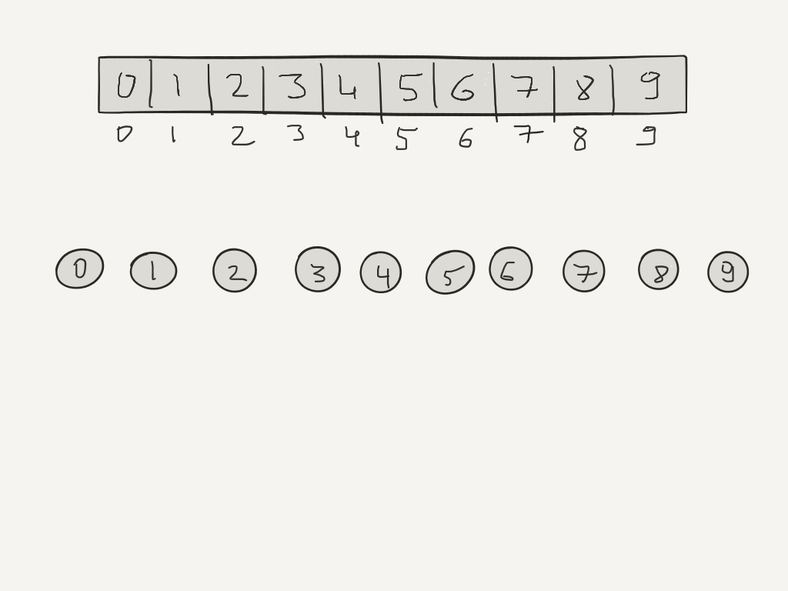
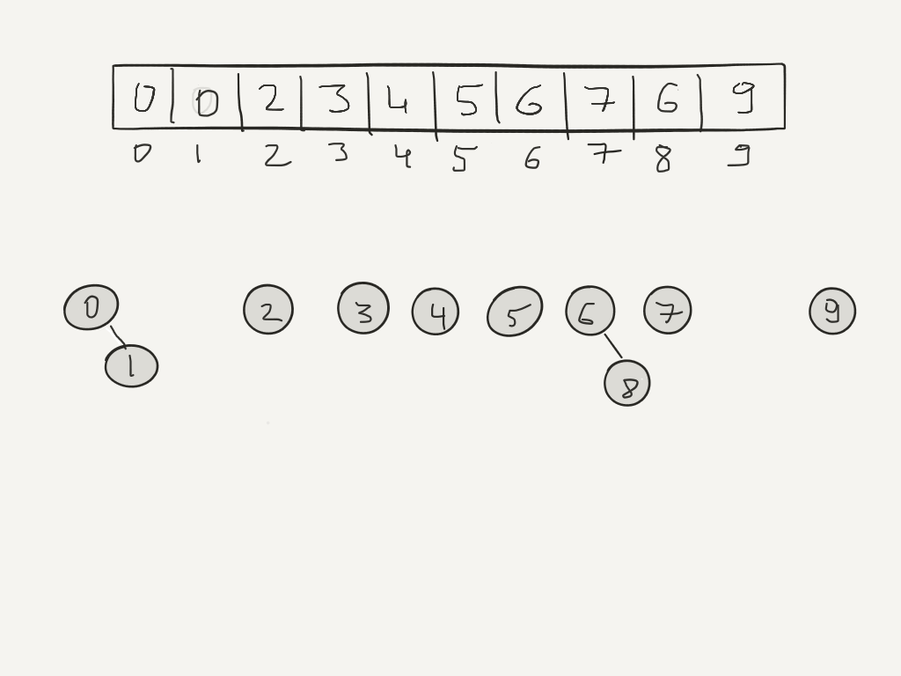
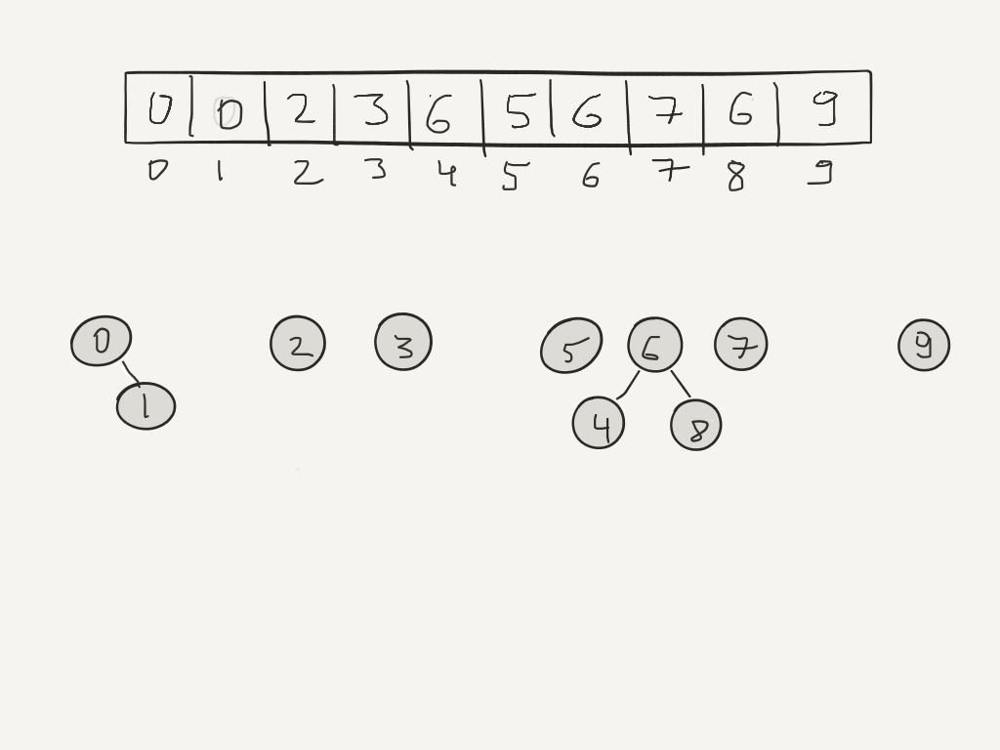
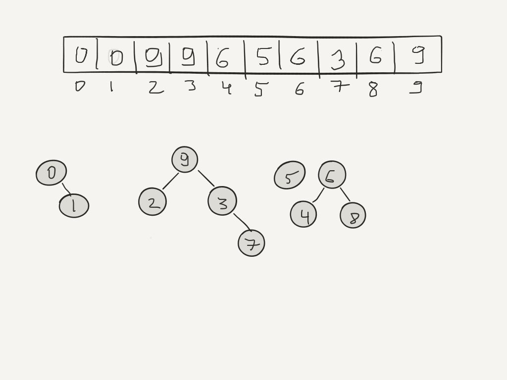
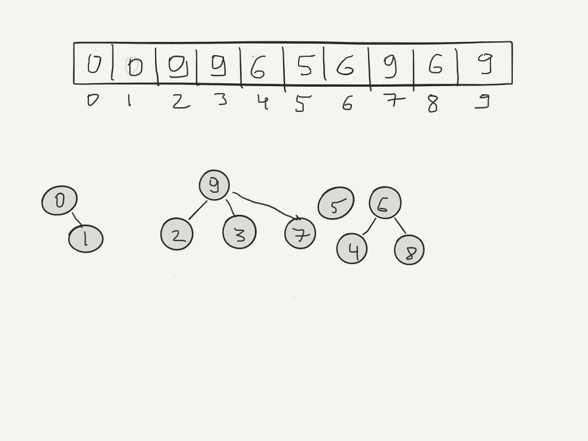
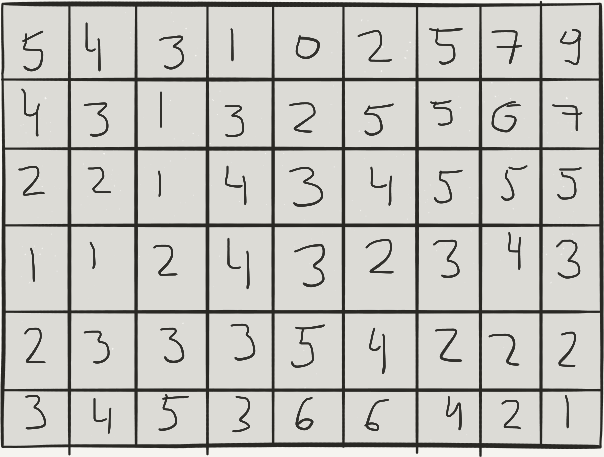
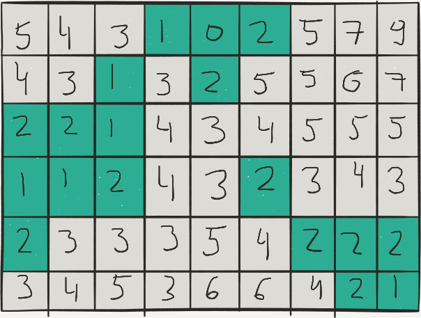
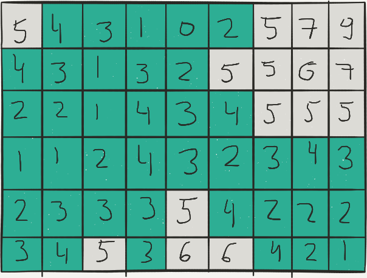
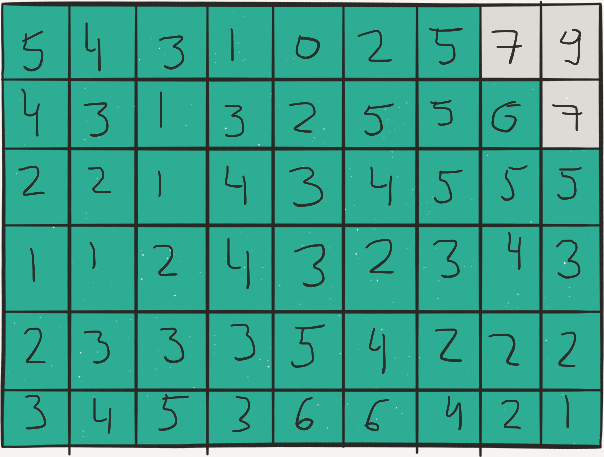
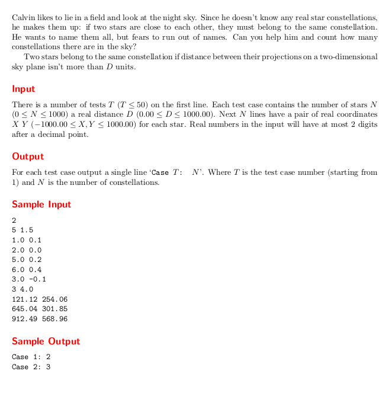

class: center, top <br><br> # CSCI-UA 480.4: APS ## Algorithmic Problem Solving <br> ## Disjoint Set / Union-Find Data Structures .author[ Instructor: Joanna Klukowska <br> created based on materials for this class by Bowen Yu and materials shared by the authors of the textbook Steven and Felix Halim ] .license[ Unless noted otherwise all content is released under [CC BY 4.0](https://creativecommons.org/licenses/by/4.0/). ] --- # Disjoint Set / Union-Find - tracks a set of elements partitioned into disjoint subsets - disjoint? --- # Disjoint Set / Union-Find - tracks a set of elements partitioned into disjoint subsets - disjoint? - non overlapping, no elements in common -- - performance: near constant time (bound by inverse [Ackerman function](https://en.wikipedia.org/wiki/Ackermann_function)) for - `find(x)` - determine which set an element belongs to - `sameSet(x,y)` - determine if x and y belong to the same set - `union(x,y)` - merge two sets of which x and y are members - the above performance assumes - path compression - merging by rank --- ## Example .center[] --- ## Example .center[] -- union(0,1)<br> union(6,8) --- ## Example .center[] -- union(4,6)<br> (uses merging by rank: the _tree_ with higher approximate height becomes the root) --- ## Example .center[] -- union(3,7)<br> union(2,9) <br> union(9,3) --- ## Example .center[] -- find(7) <br> (uses path compression) --- # Visualizations: - [USFCA visualization](https://www.cs.usfca.edu/~galles/visualization/Heap.html) - [VisuAlgo](hhttps://visualgo.net/en/ufds) --- # Challenge There are N students ( 2 <= N <= 10^5). Each student belongs to exactly one student club. We do not know what clubs the students belong to, but we do have information about pairs of students who belong to the same club. This information is presented in the form of pairs: (a,b) - this indicates that the students a and b belong to the same student club. We have P (1 <= P <= 10^5) such pairs. The pairs are not guaranteed to be unique. Find the number of student clubs on campus. __Example:__ n = 5, (so at most 5 clubs) list of pairs: ``` (1,2) (1,4) (3,5) (2,4) ``` -- __Answer__ There are two student clubs. --- # Challenge: Allies and Enemies There are N countries ( 2 <= N <= 10^5). Any pair of countries are either allies or enemies. Instructions to be implemented: - `ally(x,y)`, x and y are allies - `enemy(x,y)`, x and y are enemies - `isAlly(x,y)`, queries about being allies - `isEnemy(x,y)`, queries about being enemies (if an instruction `ally` or `enemy` conflicts with existing information, it should be ignored and a conflict should be reported ) We have the following relations: - if `ally(x,y)` and `ally(y,z)` then `ally(x,z)` - if `ally(x,y)` and `enemy(y,z)` then `enemy(x,z)` - if `enemy(x,y)` and `ally(y,z)` then `enemy(x,z)` - if `enemy(x,y)` and `enemy(y,z)` then `ally(x,z)` --- # Challenge: Allies and Enemies ## Example n = 5, (countries numbered 1 - 5) |instructions | response | |:---|:---| |`isAlly(1,2)` | false, no info yet | |`isEnemy(1,2)` | false, no info yet | |`ally(1,2)` | OK (i.e., no conflict) | |`ally(3,4)` | OK (i.e., no conflict) | |`enemy(1,2)` | conflict | |`enemy(1,4)` | OK (i.e., no conflict) | |`isEnemy(1,3)` | true | |`enemy(1,5)` | OK (i.e., no conflict) | |`isAlly(2,5)` | false | |`isAlly(3,5)` | true | |`enemy(4,5)` | conflict | --- # Challenge: Allies and Enemies ## Solution Represent each country with two values: x and x' The required instructions can be now implemented using disjoint set at follows: - ally(x,y) - if sameSet(x,y'), then conflict - otherwise union(x,y) and union(x',y') - enemy(x,y) - if sameSet(x,y), then conflict - otherwise union(x,y`) and union(x',y) - isAlly(x,y) - return sameSet(x,y) - isEnemy(x,y) - return sameSet(x,y') --- # Challenge: Allies and Enemies ## Example Solution n = 5, (countries numbered 1 - 5) |instructions | response | disjoint set | |:---|:---|:---| | | | `/ 1 / 2 / 3 / 4 / 5 / 1'/ 2'/ 3'/ 4'/ 5'/ ` | |`isAlly(1,2)` | false, no info yet | `/-1 /-1 /-1 /-1 /-1 /-1 /-1 /-1 /-1 /-1 / ` | |`isEnemy(1,2)` | false, no info yet | `/-1 /-1 /-1 /-1 /-1 /-1 /-1 /-1 /-1 /-1 / ` | |`ally(1,2)` | OK (i.e., no conflict) | `/-2 / 1 /-1 /-1 /-1 /-2 / 1'/-1 /-1 /-1 / ` | |`ally(3,4)` | OK (i.e., no conflict) | `/-2 / 1 /-2 / 3 /-1 /-2 / 1'/-2 / 3'/-1 / ` | |`enemy(1,2)` | conflict | `/-2 / 1 /-2 / 3 /-1 /-2 / 1'/-2 / 3'/-1 / ` | |`enemy(1,4)` | OK (i.e., no conflict) | `/-4 / 1 / 1'/ 3 /-1 /-4 / 1'/ 1 / 3'/-1 / ` | |`isEnemy(1,3)` | true | `/-4 / 1 / 1'/ 3 /-1 /-4 / 1'/ 1 / 3'/-1 / ` | |`enemy(1,5)` | OK (i.e., no conflict) | `/-5 / 1 / 1'/ 3 / 1'/-5 / 1'/ 1 / 3'/ 1 / ` | |`isAlly(2,5)` | false | `/-5 / 1 / 1'/ 3 / 1'/-5 / 1'/ 1 / 3'/ 1 / ` | |`isAlly(4,5)` | true | `/-5 / 1 / 1'/ 1'/ 1'/-5 / 1'/ 1 / 3'/ 1 / ` *| |`enemy(4,5)` | conflict | `/-5 / 1 / 1'/ 1'/ 1'/-5 / 1'/ 1 / 3'/ 1 / `| * path compression --- # Challenge: Build a Maze Given an NxN grid generate a random maze. - we have a fixe start point and end point - there should be no cycles in the maze - every cell should be reachable from every other cell --- # Challenge: Building a Maze __Algorithm__: - create a set of all internal walls - choose a wall at random - if that wall on each side of this wall are not in the same set, - then erase it (union the two sets in which they are in) -> this avoids cycles - repeat until all cells are in the same set (each cell is reachable from every other cell) --- # Challenge: Counting Islands There NxM grid of integers gives terrain elevation. Given a water level L, every cell with the height (=elevation) <= L is below the water. The islands are the cells above the water. An island is a group of 4-connected cells (connected by the sides, not corners). Determine the number of islands. .center[   L = 2, there are 2 islands] --- # Challenge: Counting Islands There NxM grid of integers gives terrain elevation. Given a water level L, every cell with the height (=elevation) <= L is below the water. The islands are the cells above the water. An island is a group of 4-connected cells (connected by the sides, not corners). Determine the number of islands. .center[  L = 4, there are 4 islands] --- # Challenge: Counting Islands There NxM grid of integers gives terrain elevation. Given a water level L, every cell with the height (=elevation) <= L is below the water. The islands are the cells above the water. An island is a group of 4-connected cells (connected by the sides, not corners). Determine the number of islands. .center[  L = 6, there is 1 island] --- # Counting Islands __Solution 1__ Use O(N*M) algorithm that visits all the cells one by one. For each cell that is above the level of water find all the cells adjacent to it (DFS type search) and mark them as visited. For each discovered island increment the count of islands. ---- -- __Solution 2__ Use disjoint sets data structure. -- For each cell, look at the four adjacent neighbors. If they are above L union the two cells. The number of sets is the number of islands. -- Or is it? What about the "sets" associated with the cells with values <= L? ---- -- __Problem variation__ But, what if we need to provide the answer for "continuous" levels: - global warming -> waters are rising - after floding -> waters are slowly dropping --- # Counting Islands Continuous This approach counts the islands for levels from largest (everything is under water) to smallest (everything is above water) - each cell is in its own set - for processing sort the cells from largest (highest elevation) to lowest - for level L0 (the highest level), go through all cells with values > L0 and union each of them with its four neighbors if that neighbor is also above L0; keep track of the number of islands - for level L1 (the next highest level), through through all the cells with values > L1 and <=L0, union each with its four neighbors if that neighbor is between L1 and L0; keep track of the number of islands - ... --- ## Challange: Weighted N-ary Tree Each node in a tree has a non-negative integer weight assigned to it. __Task__: Find the size of a maximum subtree in which __all__ weights are even. __Example__: .left-column2[ Number of nodes = 7 Weights of nodes | node index | node weight | |:---:|:---:| | 1 | 1 | | 2 | 2 | | 3 | 6 | | 4 | 4 | | 5 | 2 | | 6 | 0 | | 7 | 3 | Connectivity (based on node indexes): (1, 2), (1, 3), (2, 4), (2, 5), (4, 6), (6, 7) ] <!-- https://www.geeksforgeeks.org/disjoint-set-union-trees-set-1/ --> --- # Calvin's Stars  </optgroup>